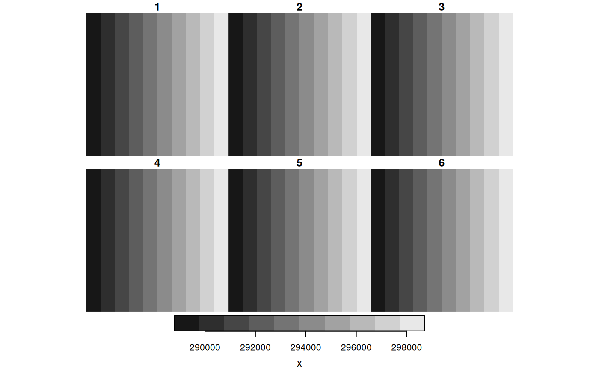
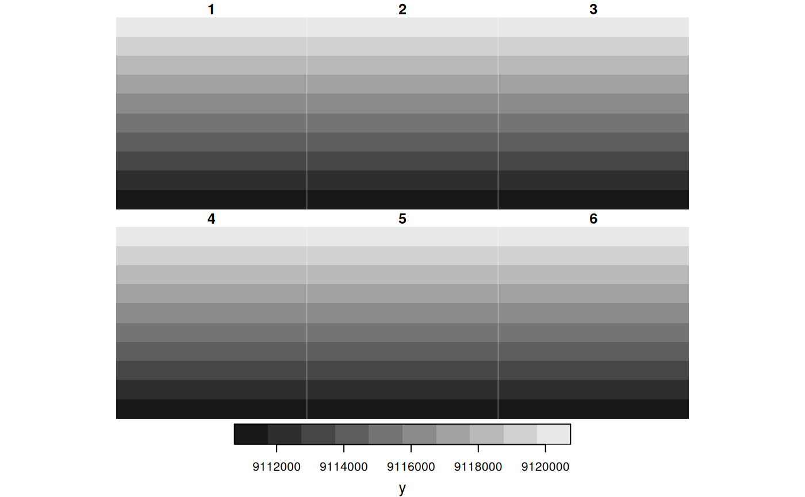
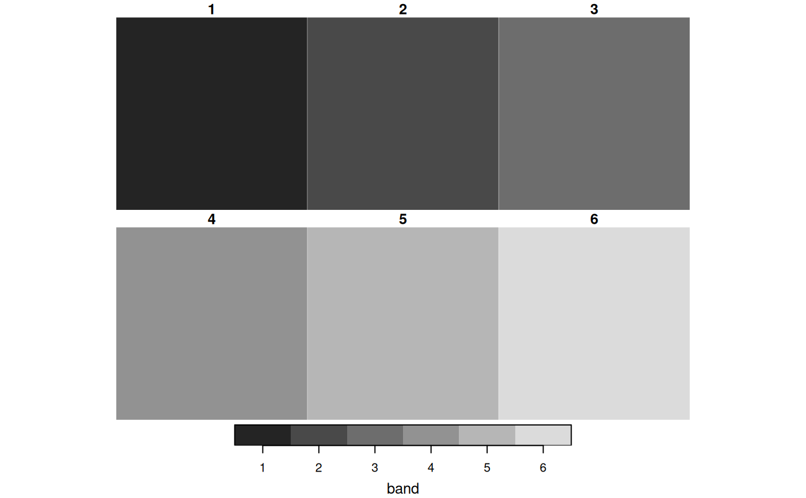

create an array with dimension values
st_dim_to_attr(x, which = seq_along(dim(x)))
| x | object of class |
|---|---|
| which | integer; indices of the dimensions to address (default: all) |
stars object with dimension values as attributes
tif = system.file("tif/L7_ETMs.tif", package = "stars") x1 = read_stars(tif) (x = st_dim_to_attr(x1))#> stars object with 3 dimensions and 3 attributes #> attribute(s): #> x y band #> Min. :288790 Min. :9110743 Min. :1.0 #> 1st Qu.:291270 1st Qu.:9113244 1st Qu.:2.0 #> Median :293750 Median :9115745 Median :3.5 #> Mean :293750 Mean :9115745 Mean :3.5 #> 3rd Qu.:296229 3rd Qu.:9118246 3rd Qu.:5.0 #> Max. :298708 Max. :9120747 Max. :6.0 #> dimension(s): #> from to offset delta refsys point values x/y #> x 1 349 288776 28.5 PROJCS["UTM Zone 25, Sout... FALSE NULL [x] #> y 1 352 9120761 -28.5 PROJCS["UTM Zone 25, Sout... FALSE NULL [y] #> band 1 6 NA NA NA NA NULL(x = st_dim_to_attr(x1, 2:3))#> stars object with 3 dimensions and 2 attributes #> attribute(s): #> y band #> Min. :9110743 Min. :1.0 #> 1st Qu.:9113244 1st Qu.:2.0 #> Median :9115745 Median :3.5 #> Mean :9115745 Mean :3.5 #> 3rd Qu.:9118246 3rd Qu.:5.0 #> Max. :9120747 Max. :6.0 #> dimension(s): #> from to offset delta refsys point values x/y #> x 1 349 288776 28.5 PROJCS["UTM Zone 25, Sout... FALSE NULL [x] #> y 1 352 9120761 -28.5 PROJCS["UTM Zone 25, Sout... FALSE NULL [y] #> band 1 6 NA NA NA NA NULL(x= st_dim_to_attr(x1, 3))#> stars object with 3 dimensions and 1 attribute #> attribute(s): #> band #> Min. :1.0 #> 1st Qu.:2.0 #> Median :3.5 #> Mean :3.5 #> 3rd Qu.:5.0 #> Max. :6.0 #> dimension(s): #> from to offset delta refsys point values x/y #> x 1 349 288776 28.5 PROJCS["UTM Zone 25, Sout... FALSE NULL [x] #> y 1 352 9120761 -28.5 PROJCS["UTM Zone 25, Sout... FALSE NULL [y] #> band 1 6 NA NA NA NA NULL